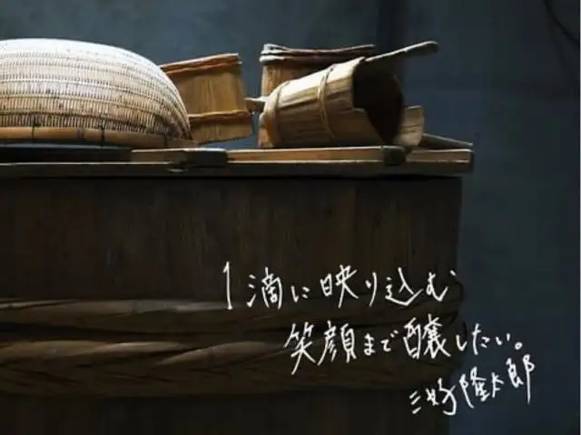
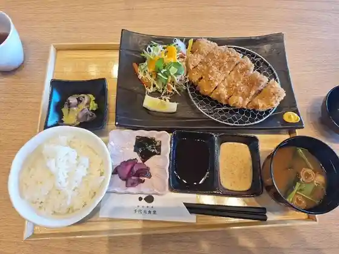
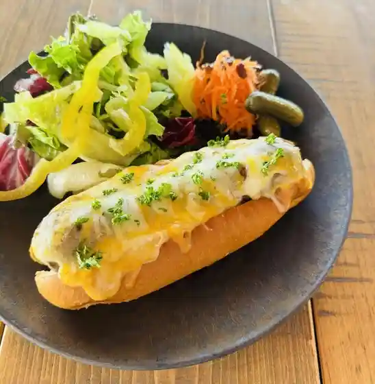
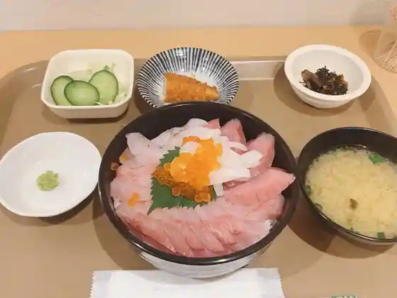
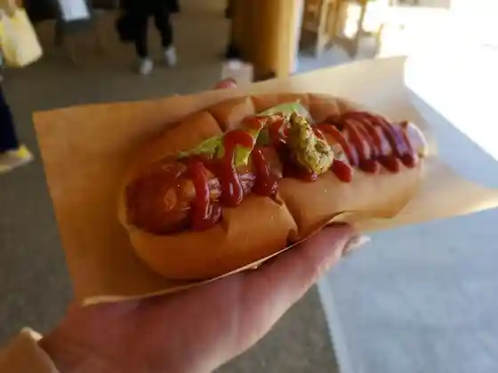
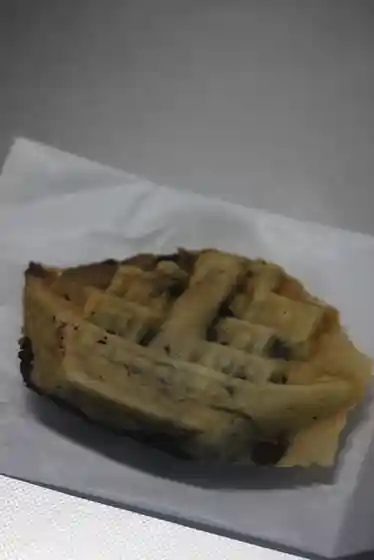
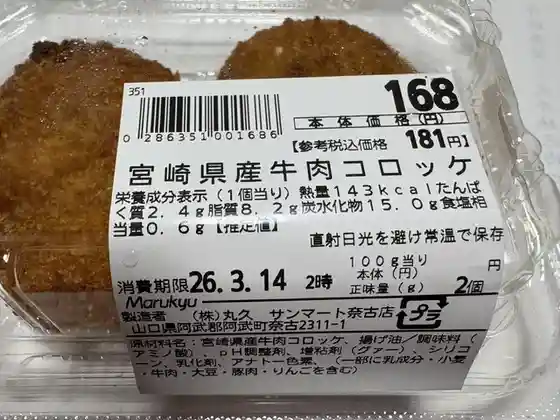
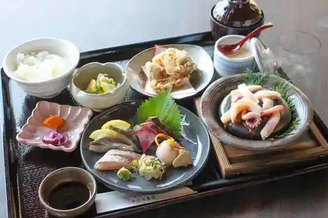
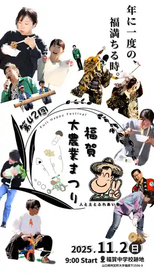

Abu
Abu · Yamaguchi
Abu
Highlighted on the Yamaguchi map.

Dining
千代丸食堂
千代丸食堂

道の駅 阿武町
道の駅 阿武町

SUNbashi CAFE
SUNbashi CAFE

みなと食堂 ふなだまり
みなと食堂 ふなだまり

ラパン
ラパン

８４６総本店
846総 Honten

サンマート 奈古店
サンマート 奈古店
ポ・ヤシロ 道の駅阿武町店
ポ・ヤシロ 道の駅阿武町店
あんな堂
あんな堂
阿武町酒場
阿武町酒場
うぉっちゃ食堂
うぉっちゃ食堂
たこ元
たこ元
福の里直売所
福の里直売所
Yashiro
Yashiro
Dining Cafe 846
Dining Cafe 846
Pankobo Aguri Saiko
Pankobo Aguri Saiko
Kadono Yashiro
Kadono Yashiro
Chippora Shokudo
Chippora Shokudo
Ono Riyotei
Ono Riyotei
Chikusen
Chikusen
Sights
Sogo Kawa Kyoryo (Sogo Tekkyo)
Roadside Station Abu

Fuku Ga Daino Gyo Festival 2026

ABU Kyanpufiirudo
Kiyoshigahama Beach
Nihonkai Onsen (Kashima Baths)
ABU CAMPFIELD KIYOGAHAMA BASE (Kyu En Gaku Campground)
Daikaku Tera
Kitaura Coast (Na Ko Uta Sato)
SUNbashi CAFE
Abu no Tsuru Shuzo Shuzokengaku
Fufu Shima (Oga Shima Mega Shima)
Oyama Jinja Kyozuka
Sasakikojiro no Haka
Medaki
Shirasu Tatara Seitetsu Iseki
Hon Hikari In
Himejima Jurin
Tsurugamine Hachiman Shrine
Hikkusafushoppufakutorii
Ho Seki Tera
Kyo Masa Tera
Sato Kawa
Kin Sha Kagura Mai
Ta Yo Tera
Sogo Kagura Mai
Fuku Ga no Koi no Bori
En Dakeyama Hodo
Abu Town Hall